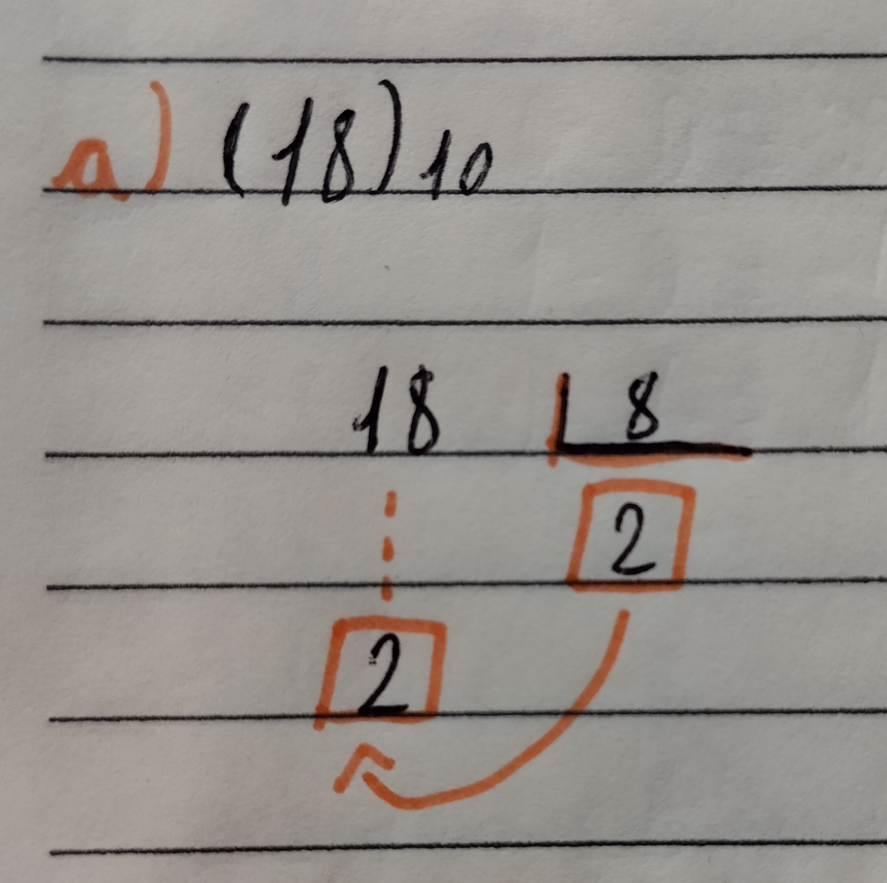
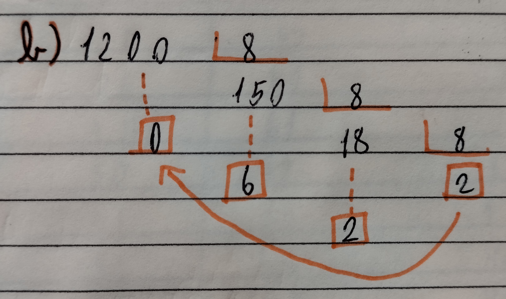
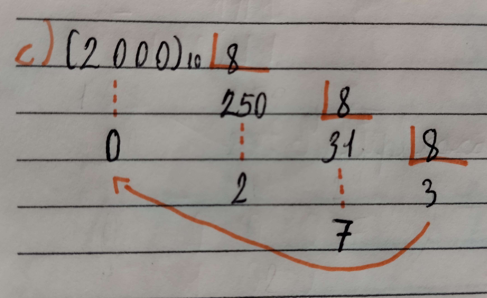
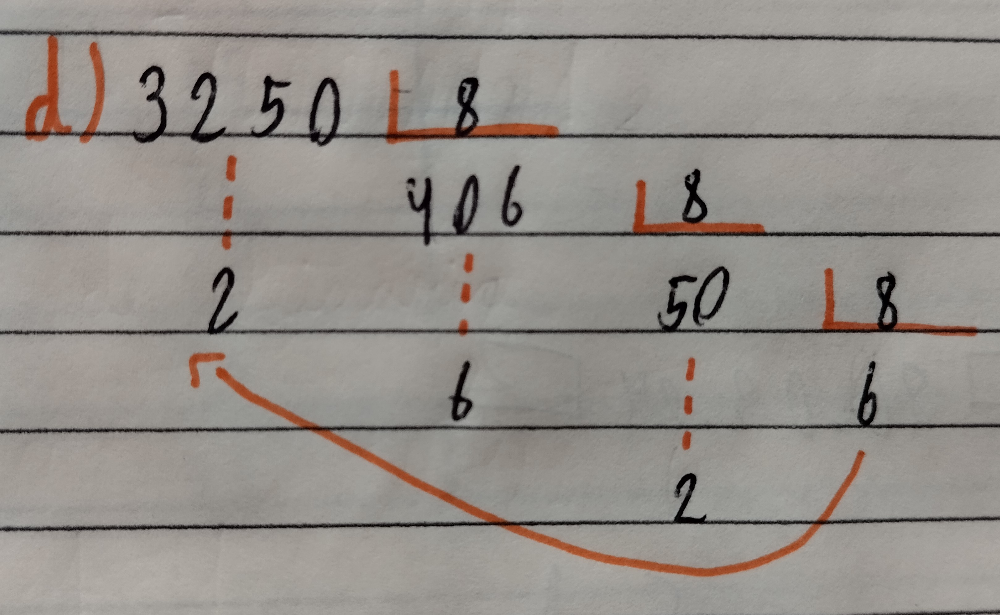
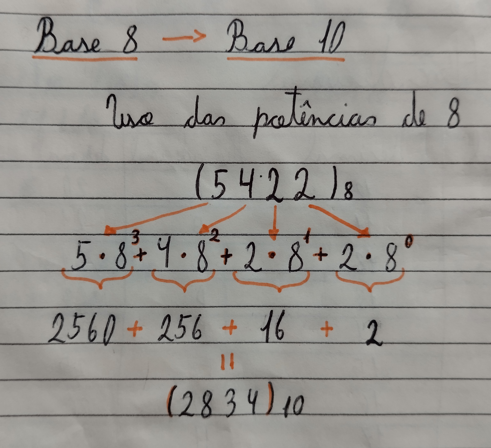
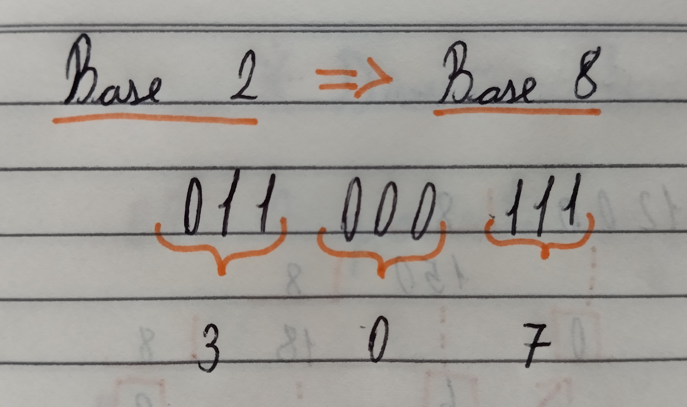

Sistema Octal
O sistema de numeração octal também é conhecido como base 8, ele tem esse nome pois utiliza 8 algarismos diferentes para representar os números. Os algarismos ou simbolos utilizados são ( 0, 1, 2, 3, 4, 5, 6, 7 ).
Converção de Decimal para Binário
Base 10 -----> Base 8
Para converter da base 10 para a base 8 é utilizado, também, o medodo de divisões consecutivas,ou também conhecido como metodo da escadinha. Você terá que dividir o numero consecutivamente por 8 guardando o resto até não ser mais possivél dividir o resto
|  | Nesse caso o número (18)10 foi dividido por 8 assim o resultado sendo (22)8 |  | Aqui é o mesmo caso sendo pego do último(2) para o primeiro(0). |
 
Conversão de Octal para Decimal
Base 8 -----> Base 10
|  | Para trasnformar um número octal para decimal cada dígito deve ser multiplicado por potências de 8.
Como no exemplo aqui deve-se começar pelo último digito sendo multiplicado por 80, o penultimo por 81 e por ai vai. Após isso, é necessário fazer uma cona de adição com os resultados das potências |
Conversão de Bináio para Octal
Base 2 -----> Base 8
Para converter um número da Base 2 para a Base 5, por exemplo, teríamosque, necessariamente, fazer a conversão de binário para decimal e depois a conversão de decimal para a Base 5. No entanto, a conversão de binário para octal pode ser feita de forma mais simples e rápida. Isso porque 8 é uma potência de 2, isto é, 8 = 23. Com isso, podemos dizer que precisamos de 3 dígitos binários para designar 1 dígito octal.
Assim podemos ir da base 2 direto pra base 8, como no exemplo:
|  | No caso:
(011)2 é = (3)8 (000)2 é = (0)8 (111)2 é = (7)8 |
Também é possível fazer a conversão ao contrário transformando um número octal em binário

Tabela dos Octais
| Sistema Decimal | Sistema Octal | Sistema Decimal | Sistema Octal | Sistema Decimal | Sistema Octal |
|---|---|---|---|---|---|
| 0 | 0 | 17 | 21 | 34 | 42 |
| 1 | 1 | 18 | 22 | 35 | 43 |
| 2 | 2 | 19 | 23 | 36 | 44 |
| 3 | 3 | 20 | 24 | 37 | 45 |
| 4 | 4 | 21 | 25 | 38 | 46 |
| 5 | 5 | 22 | 26 | 39 | 47 |
| 6 | 6 | 23 | 27 | 40 | 50 |
| 7 | 7 | 24 | 30 | 41 | 51 |
| 8 | 10 | 25 | 31 | 42 | 52 |
| 9 | 11 | 26 | 32 | 43 | 53 |
| 10 | 12 | 27 | 33 | 44 | 54 |
| 11 | 13 | 28 | 34 | 45 | 55 |
| 12 | 14 | 29 | 35 | 46 | 56 |
| 13 | 15 | 30 | 36 | 47 | 57 |
| 14 | 16 | 31 | 37 | 48 | 60 |
| 15 | 17 | 32 | 40 | 49 | 61 |
| 16 | 20 | 33 | 41 | 50 | 62 |
fonte: documentos prof. Váleria